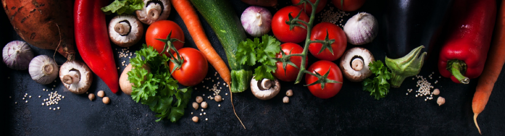

Carrot photo created by valeria_aksakova - www.freepik.com
So you want to know a little bit about us... We thought you would never ask!
Rogue Pickings was born of a kinship with the land in 2008. Terry and John knew the value of locally grown foods and shared a deep passion for creating flavorful, nutrient-packed dishes that would leave you licking the plate when you were finished.Their love of food and the top notch dishes have become the stuff of legends in the Bay area. We hope you will sample our delights and enjoy your meal as much as we enjoyed creating it!
Hours of operation
We're open 7 days a week, 6:30 AM to 3:00 PM for your culinary needs!